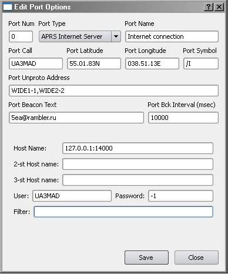
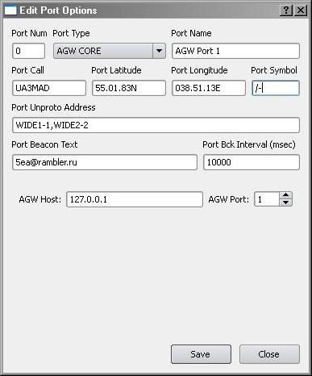

Данный тип порта используется для обмена сообщениями с APRS серверами глобальной сети Internet. Для работы данного порта необходим доступ к сети internet. Предполагается, что порт будет иметь три альтернативных адреса серверов и в случае разрыва соединения будет переподключаться к другим серверам (пока это не реализовано).
Общие настройки порта при создании берутся с первой закладки: позывной порта (Port Call), широта и долгота (Port Latitude и Port Longitude), символ порта (Port Symbol), сеть ретрансляторов для отправки маяка (Port Unproto Addrerss), текст маяка (Port Beacon Text) и интервал отправки маяка в msec (Port Beacon Interval).
Правильность ввода широты и долготы не контролируется, поэтому соблютайте правильный формат записи: Lat XX.YY.ZZN и Lng XXX.YY.ZZE. Символ интернет порта рекомендуется "/I" - выглядит как значек "IP". Значение Unproto Address для этого типа порта не имеет особого значения для работы и при передаче на сервер все равно будет "APU25N,TCPIP*". Длина поля маяка не может быть больше 43-х символов (как в UI). Будем благоразумными и делаем маяк по возможности коротким, т. к. он занимает большую часть всего текста маяка (на КВ при скорости 300 бод разница бывает ощутимой). Интервал маяка указывается в секундах.
Параметры специфичные для данного типа порта - это: Host name - имя основного интернет сервера, а так же два резервных. В строке адреса указывается доменное имя сервера (или его ip адрес в сети internet) и через двоеточие (":") порт для подключения (работа через прокси пока не поддерживается, но будет реализовываться, т. к. иногда хотелось бы подключиться к серверу, а прямого доступа нет). Для авторизации на APRS сервере необходимо указать имя паользователя и пароль. Пароль дают при регистрации на APRS серверах. Если указать неправильный пароль, вы не будете авторизованы. Если авторизация не прошла, то сервер не будет принимать от вас APRS пакеты, но будет посылать на вас все пакеты (с учетом фильтра), которые приходят на сервер. Если вы не авторизованы, в качестве пароля можно указать "-1". Фильтр укажет серверу, какие пакеты вы хотите получать (т. к. на APRS сервера приходят пакеты не только от радиолюбительских станций, то может оказаться, что вы увидите информацию от станций, которые вас не интересуют). Не все сервера поддерживают работу с фильтрами, поэтому рекомендуется выбирать адреса серверов, которые поддерживают фильтрацию.
Небольшое замечание: под одним именем и паролем к APRS серверам может быть только одно соединение. При новом соединении те, кто был подключен до - будут отключены.
Особенности настройки ядра AGW в данном руководстве не рассматриваются. Важным моментом является то, что соединение с ядром AGW ведется через протокол TCPIP по порту 8000. При многопортовой конфигурации AGW в ядре QAPRS так же может быть несколько портов - соединений с портами AGW. Каждому порту QAPRS типа AGW соответствует только один порт в AGW Core. Каджый отдельный порт QAPRS типа AGW имеет свое соединение с AGW Core. Для соединения с ядром AGW указывается адрес (если ядро AGW находится на той же машине, что и QAPRS, то указывается адрес 127.0.0.1) и порт (стандартно 8000).
Взаимодействие с ядром agw идет в режиме raw. Сначала идет заголовок AGW с именем команды и номером порта AGW а в остальном это такой же пакет AX.25 за исключением того, что он не содержит контрольной суммы.
По соединению ядро AGW присылает все принятые пакеты со всех своих портов, но порт QAPRS выбирает только тот порт, на который он настроен.
AXIP использует для передачи пакетов AX.25 стек протоколов TCP/IP. Установления TCP соединения не происходит, вся передача происходит с использоваием UDP пакетов. Для приема пакетов открывается определенный UDP порт на прием сообщений. Порт UPD по которому принимаются пакеты является одним из параметров, являщимся специфическим для данного вида порта. Другими такими параметрами являются адрес и порт удаленного компьютера, на который будут передаваться пакеты.
Формат пакета полностью соответствует формату пакета AX.25 (формат адресного поля, служебные байты, сообщение, контрольная сумма) с тем отличием, что в начале и в конце отстутствует флаг 01111110b.
Данный формат совместим с реализацией AXIP в ядре FLEXNET32 и AGW (в ядре [x]-net не проверял).